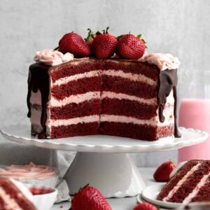

Grannies Favorites: a cookbook
Contents
Raspberry Cookies
PREP TIME = 30 mins
COOK TIME = 15 mins
FREEZE TIME = 1 hour
TOAL TIME = 1 hour 45 mins
SERVINGS = 12 large cookies
INGREDIENTS
Produce
- 1 1/2 cup Raspberry, frozen
Condiments
For the Raspberry Syrup
- 1 cup frozen raspberries
- 1/4 cup granulated sugar
Baking and Spices
- 1 1/2 tsp Baking powder
- 1 1/2 tbsp Cornstarch
-
2 heaping tbsp Cornstarch mixed with 3 tablespoons water
- 3 drops Food coloring, red
- 2 cups Gluten free flour
- 1 5/8 cup Granulated sugar
- 1/2 tsp Kosher salt
Dairy
- 1/2 cup Butter, unsalted
- 3 tbsp Milk
INSTRUCTIONS
For the Raspberry Syrup
-
In a saucepan set over medium heat, cook the 1/4 cup
granulated sugar and 1 cup of raspberries, stirring
constantly, until they are broken down and syrupy.
About 10 min. It will still appear a little chunky and
that's fine.
-
Set a mesh colander over a bowl. Pour the raspberry liquid
through the strainer and set aside to let cool. There should
be about 2-3 tablespoons of raspberry syrup once it's
strained.
For the Cookies
-
Measure out 1/2 cup frozen raspberries. Rough chop the
raspberries into small pieces. Be careful not to over chop;
you don't want raspberry pulp.
Place the chopped raspberries into a freezer safe bowl and
pop back into the freezer until you're ready to add them
into the dough.
-
In a large bowl, whisk together the gluten free flour,
baking powder, 1.5 tablespoons of cornstarch and salt. Set
aside.
-
In a small bowl, mix together the remaining 2 heaping
tablespoons of cornstarch with 3 tablespoons of
water until thin and watery.
-
In a large bowl of an electric mixer fitted with the paddle
attachment, beat the butter stick and 1 1/4 cups of the
sugar until it is soft and creamy.
-
Slowly beat the cornstarch water mixture, milk, the
cooled strained raspberry liquid (about 2-3 tablespoons)
into the creamed butter and sugar. It will look pink and
chunky.
-
Slowly beat in the gluten free flour mixture a little at a
time until just combined. If desired, add in 3-4 drops of
red food coloring and mix into the dough so it is blended
throughout.
-
Gently using a spatula, fold in the frozen chopped
raspberries. The dough will become a lovely marbled pink
color. Be careful not to mix too much or the dough will
become slimy.
-
Keep the dough in the bowl, cover the top with plastic wrap
and freeze for at least 1 hour.
You must not
skip this step or the cookies will spread everywhere and it
must be frozen, not in the fridge.
-
After the dough has been in the freezer for at least 1 hour,
preheat the oven to 325 degrees Fahrenheit. Line a baking
sheet with parchment paper. Set aside.
-
Use an ice cream scoop or a large cookie scoop to make large
cookies. It makes 12 scoops. Roll each dough ball in the
extra 2 tablespoons of granulated sugar to coat completely.
-
Place dough balls about 3-4 inches apart on the parchment
lined baking sheet. Bake the cookies at 325 degrees
Fahrenheit for 15 minutes. Store extra dough balls in the
freezer while the rest are baking if they don't all fit. I
only bake 6 at a time.
-
Immediately reshape the cookies when they come out of the
oven by using a spatula to push them into a circle shape and
let cool on the baking sheet for 5 min before transferring
to a cooling rack. If you don't do this, the cookies will
break apart into a giant mess.
Storing
Keep extra cookies in an airtight container in the fridge for up
to 3 days.
Strawberry Red Velvet Cake
PREP TIME = 1 hour
COOK TIME = 45 mins
Chill TIME = 20 mins
TOAL TIME = 2 hours 5 mins
SERVINGS = 12 slices

INGREDIENTS
For the Cake
- 2.5 cups gluten free flour
- 1/4 cup cocoa powder
- 1 teaspoon baking powder
- 1 teaspoon baking soda
- 1 teaspoon kosher salt
- 1/2 cup unsalted butter
- 1.5 cups granulated sugar
-
4 heaping tablespoons cornstarch mixed with
6 tablespoons water
- 1 1/3 cups milk , keep 1/3 separate
-
1 tablespoon plus 1 teaspoon white vinegar ,kept
separate
- 1 teaspoon pure vanilla extract
- 1 tablespoon plus 1 teaspoon red liquid food coloring
For the Strawberry Buttercream
- 3 1/2 cups strawberries , fresh or frozen
- 1 1/2 cups granulated sugar
- 8 cups confectioners' sugar
- 1 cup unsalted butter
- 1/4 cup plus 2 tablespoons water
- 2 teaspoons pure vanilla extract
- 2 pinches kosher salt
For the Chocolate Drip
- 3/4 cup chocolate chips
- 6 tablespoons unsalted butter
INSTRUCTIONS
For the Frosting
-
In a small saucepan set over medium heat, combine the
quartered strawberries and granulated sugar. Stir
constantly for about 5-8 minutes until the strawberries
have liquified a bit and the sugar has dissolved. Use
the back of your spoon to mash the strawberries apart.
-
Set a strainer or a mesh colander over a bowl and strain
the strawberry liquid. You don't want any of the seeds,
you just want the liquid.
-
With the paddle attachment of an electric mixer, or
using a large bowl and a hand mixer, beat the softened
vegan baking stick until creamy. About 2-3 minutes.
-
Add the confectioners sugar, water, strained strawberry
liquid (about 8 tablespoons), salt and vanilla. Beat
until smooth and combined.
If the strawberry liquid
solidified a bit, that's ok. Just use a spatula to
scrape it into your mixing bowl.
For the Cake
-
Preheat the oven to 350 degrees Fahrenheit and grease
and line two 8 inch cake pans with parchment paper. Set aside.
-
In a large bowl, whisk together the gluten free flour,
baking powder, 1.5 tablespoons of cornstarch and salt.
Set aside.
-
In a small bowl, mix together the remaining 2 heaping
tablespoons of cornstarch with 3 tablespoons of
water until thin and watery.
-
In a large bowl of an electric mixer fitted with the paddle
attachment, beat the butter stick and 1 1/4 cups of the
sugar until it is soft and creamy.
-
Slowly beat the cornstarch water mixture, milk, the
cooled strained raspberry liquid (about 2-3 tablespoons)
into the creamed butter and sugar. It will look pink and
chunky.
-
Slowly beat in the gluten free flour mixture a little at a
time until just combined. If desired, add in 3-4 drops of
red food coloring and mix into the dough so it is blended
throughout.
-
Gently using a spatula, fold in the frozen chopped
raspberries. The dough will become a lovely marbled pink
color. Be careful not to mix too much or the dough will
become slimy.
-
Keep the dough in the bowl, cover the top with plastic wrap
and freeze for at least 1 hour.
You must not
skip this step or the cookies will spread everywhere and it
must be frozen, not in the fridge.
-
After the dough has been in the freezer for at least 1 hour,
preheat the oven to 325 degrees Fahrenheit. Line a baking
sheet with parchment paper. Set aside.
-
Use an ice cream scoop or a large cookie scoop to make large
cookies. It makes 12 scoops. Roll each dough ball in the
extra 2 tablespoons of granulated sugar to coat completely.
-
Place dough balls about 3-4 inches apart on the parchment
lined baking sheet. Bake the cookies at 325 degrees
Fahrenheit for 15 minutes. Store extra dough balls in the
freezer while the rest are baking if they don't all fit. I
only bake 6 at a time.
-
Immediately reshape the cookies when they come out of the
oven by using a spatula to push them into a circle shape and
let cool on the baking sheet for 5 min before transferring
to a cooling rack. If you don't do this, the cookies will
break apart into a giant mess.
Storing
Keep extra cookies in an airtight container in the fridge for up
to 3 days.